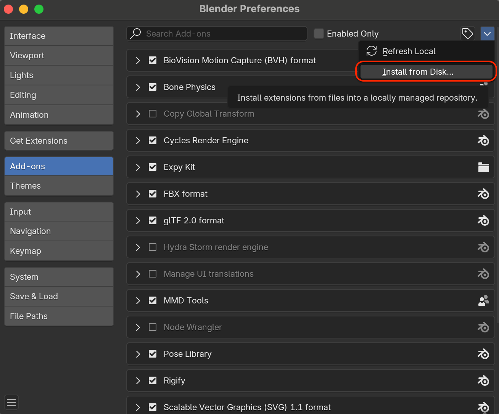
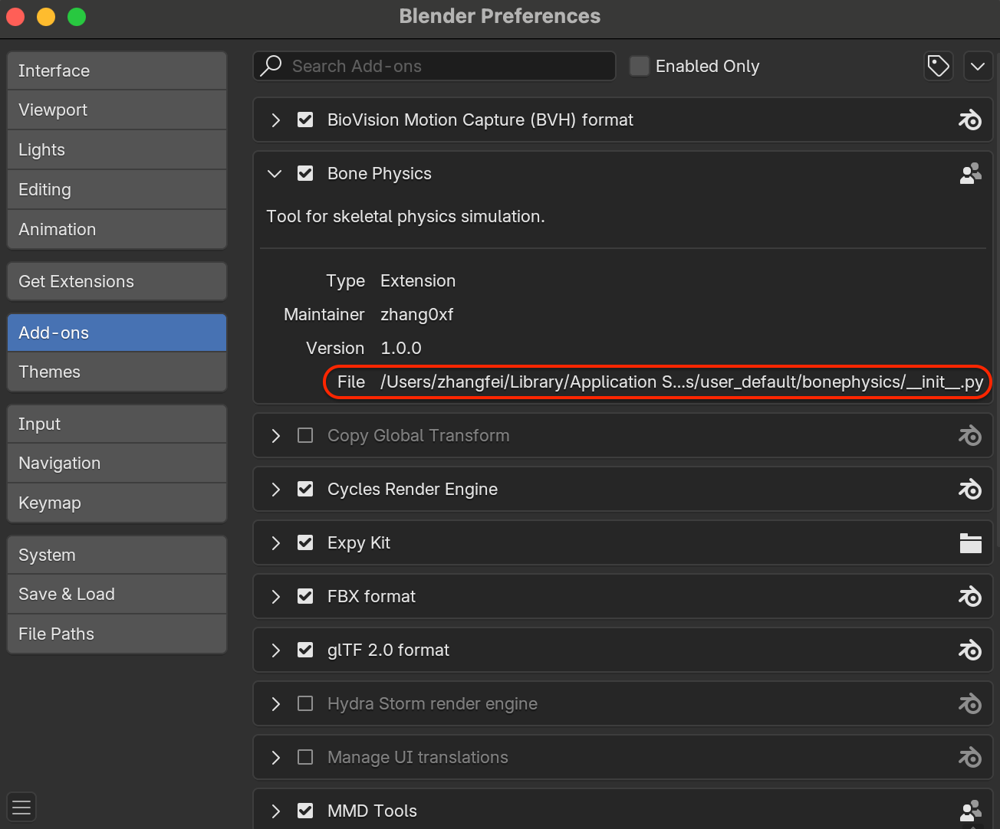

安装
安装插件
重要
请勿解压下载的文件！
在 Blender 中，点击 。
点击右上角的下拉箭头按钮，然后选择 。

卸载插件
如果插件没有提供 Uninstall（卸载） 按钮：
打开 Blender，进入 。
在列表中找到 Bone Physics，取消勾选以禁用该插件。
在 Blender 的插件目录中手动删除该插件文件夹。
重新启动 Blender。
备注
默认的插件目录通常位于：
MacOS：
~/Library/Application Support/Blender/4.2/extensions/user_default/Windows：
Linux：
具体路径可能会因 Blender 配置不同而有所变化。建议在 File 路径中查看实际的插件目录。
